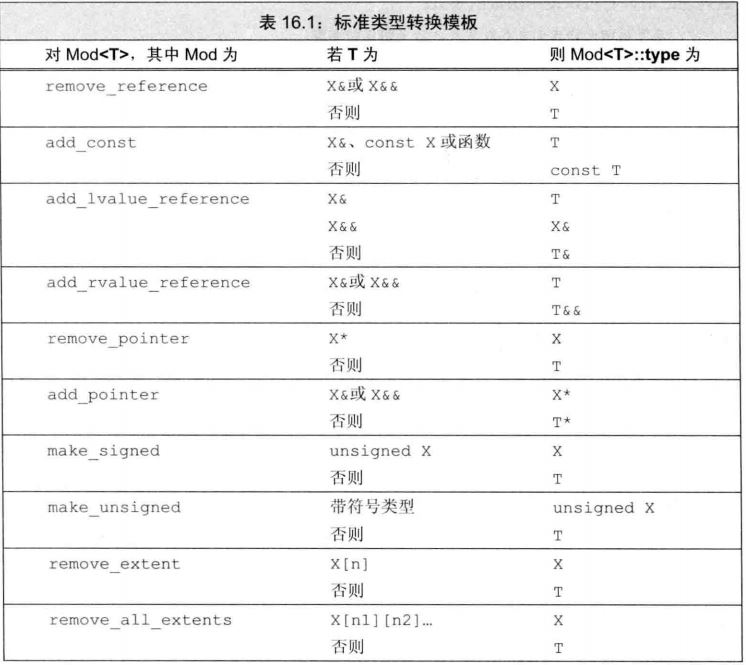

模板及泛型编程与面向对象有根本的区别：显式接口和运行期多态仍存在，但重要性降低，隐式接口和编译期多态移到前头了；C++中的元编程指针对类型以及常数进行推导，演算和构造等操作，这些操作的共同特点是都是面向编译期逻辑，大多通过模板技巧实现
总结：
经验总结：（Modern Design P126） 问题：
能不能定义函数指针模板或std::function<>模板？
模板参数定义为const T&，能不能将传给模板的参数传递给参数类型为const char的函数？
虚函数支不支持可变参数成员模板？
怎样分解模板参数包中的类型，并取出其中指定的类型？
能不能在 构造函数/其他成员函数 参数中没有模板类型参数的情况下使用SFINAE？——目前看不行
可变长模板参数和带默认值的模板参数哪个在参数列表的右边？
如何尽可能的防止模板膨胀？
总结：
元编程：
技术：
编译期断言：利用数组大小为0是非法的特性。具体参考基础总结
偏特化
局部类：不能定义static成员，不能访问non-static局部变量。局部类令人感兴趣的是可以在template函数中被使用——有什么感兴趣的？
静态分派：常整数映射为型别,用来产生型别的那个数值是一个枚举值，一般而言，符合以下两个条件便可使用Int2Type
template<int v>
struct Int2Type{
enum { value = v };
};
template<typename T>
struct Type2Type{
typedef T OriginalType;
};
template<bool flag, typename T, typename U>
struct Select{
typedef T Result;
}
template<typename T, typename U>
struct Select{
typedef U Result;
}
class NullType;
struct EmptyType {};
函数模板：
模板类型参数：模板的类型参数可以作为函数的返回值类型，参数类型，以及在函数体内用于变量声明或类型转换
函数模板是通过参数推导的，不需要指定参数类型就可以调用
函数模板可以声明为inline和constexpr，如同非模板参数一样放在模板参数列表之后，返回类型之前
可以有默认参数，类模板在为多个默认模板参数指定默认值的时候，必须按照从右到左的顺序指定，但与类模板不同的是这个条件对函数模板来说不是必须的
编译器只根据函数调用时给出的实参列表来推导参数类型，与函数参数类型无关的模板参数其值无法推导
与函数返回值相关的模板参数其值也无法推导
所有可推导模板参数必须是连续位于模板参数列表尾部，中间不能有不可推导的模板参数
模板编译：
当编译器遇到模板定义时并不生成代码，只有当实例化出模板的一个特定版本时编译器才会生成代码
函数模板和模板类的头文件必须包含定义：为了生成一个实例化版本，编译器需要掌握函数模板或类模板成员函数的定义——如果是同一编译单元是没有问题的，在编译阶段就能找到定义，但是不同的编译单元要靠链接实现就不行了，调用的编译单元只有模板声明，只好预留一个调用链接，期望在最后的链接过程中可以找到实现，找不到则报链接出错
链接器如何识别重复模板实例？C++标准给出的解决方案是，在链接时识别及合并等价的模板实例
类模板：与函数模板不同的是类模板不自动推导模板参数类型
定义在类模板内部的成员函数被隐式声明为内联
默认情况下，对于一个实例化了的类模板，其成员只有在使用时才被实例化，这一特性使得即使某种类型不能完全符合模板操作的要求，仍然能够用该类型实例化类
模板和友元：如果一个类模板包含一个非模板友元，则友元可以访问所有模板实例；如果友元自身是模板，类可以授权给所有友元模板实例，也可以只授权给特定实例——友元相关
模板类型别名
typedef：由于模板不是一个类型，不能定义一个typedef引用一个模板，但同其他类型一样可以定义一个typedef来引用实例化的类：typedef T<string> StrT
新标准（哪个新标准？）允许我们为类模板定义一个类型别名：template<typename T> using twin = pair<T,T>
静态成员变量：类模板的每个实例都有一个独有的static对象；
成员模板：不能是虚函数，其他同普通模板函数一样，原因：普通成员函数模板无所谓，什么时候需要什么时候实例化，编译器不用知道需要实例化多少个，但是虚函数的个数必须要知道，因为要创建虚表（编译器在处理类的定义时就要确定这个类的虚表的大小），所以不支持虚函数成员函数模板
使用模板类型参数的类型成员必须加关键字typename（用来验明是嵌套从属类型名称），如typename T::Type，这一规则的例外是，typaname不可以出现在父类列表（继承时的）内的嵌套从属类型名称之前，也不能出现在成员初始化列表中作为父类的修饰符——这两个例外规则需要验证；类内定义的类型的类型成员也是需要加关键字typename的
C++11支持函数和类模板提供默认实参（更早的C++标准只支持类模板默认参数），与函数默认实参一样，只有当它右侧所有实参都有默认实参时，它才可以有默认实参，类模板要指定多个默认值，需要按从右到左的顺序来，函数模板不存在这个限制。typename=void 默认类型
控制实例化：
extern template declaration; // 实例化声明
template declaration; // 实例化定义
模板参数：可以有三种：类型模板参数/非类型模板参数/模板型模板参数
// 糟糕的设计：用户必须指定所有三个模板参数，如果把返回值放到第一个参数位置就只需指定一个参数
template<typename T1, typename T2, typename T3>
T3 alternative_sum(T2, T1);
调用：
auto val=algernative_sum<double, int ,int>(parm1, parm2)
tempalte<typename It>
??? &fcn(It beg, It end)
{
return *beg;
}
并不知道返回结果的准确类型，但知道类型是所处理序列的元素类型，为此，可使用尾置返回类型：
tempalte<typename It>
auto fcn(It beg, It end) -> decltype(*beg)
{ /**/ }
template<typename T>int compare(const T&, const T&)
通过指针指向一个compare的实例：int (*pf1)(const int&, const int&) = compare;
func(compare) // 这种做法是错误的
func(compare<int>) // 正确：显示指出实例化哪个compare版本
template<typename T>void f(T&& ); // 绑定到非const右值
template<typename T>void f(const T&); // 左值和const右值
template<typename T>
typename remove_reference<T>::type &&move(T &&t) // 推断：实参类型分别为左值和右值时的返回值是什么？
{
return static_cast<typename remove_reference<T>::type&&>(t);
}
可变参数模板：
template<typename ...TPack>
void bar(TPack ...pack, int i) { cout << "Enter in bar" << endl; }
int main(){
bar<int, int>(0,1,2); // 模板参数包TPack显示推导为int, int
bar(0); // 无显式模板实参类型，将不匹配任何类型
bar('a', 0); // 错误用法，因为pack不会匹配任意类型
}
template<typename T, typename ...TPack>
T emplace_construct(TPack&& ...pack){ return T(std::forward<TPack>(pack)...); }
// 在基类列表处展开
template<typename ...Base>
struct derived_class: Base... {};
template<typename ... Args> void g(Args ... args){
cout << sizeof...(Args) << endl;
cout << sizeof...(args) << endl;
}
template<typename T, typename... Args>
ostream& print(ostream& os, const T& t, const Args&... rest)//扩展模板参数包Args，将模式const Args&应用到模板参数Args
{ //中的每个元素，因此，此模式的扩展结果是一个逗号分隔的零个或多个类型的列表，每个类型都是const type&
os << t << ", ";
return print(os, rest...); // 扩展rest，为print调用生成实参列表
}
print(os, debug_rep(rest)...); //更复杂的扩展:对每个参数调用debug_rep后再给print
模板特例化：
特例化的本质是实例化一个模板而非重载它，因此特例化不影响函数匹配
模板及其特例化版本应该声明在同一个文件中，要保证通例的定义或声明放在特例的前面
类模板可以偏特化，函数模板只能全特化
可以特例化类成员而不是类——？
最特化匹配：非模板函数具有最高的优先权。编译器在进行匹配时是从最特殊的开始匹配，然后是次特殊，最后是一般的；如果有一样的特殊版本，编译器就不知道究竟要匹配哪个了，这时候会报错。什么是最特殊的？比较两个模板A和B，能匹配A的都能匹配B，但能匹配B的不一定能匹配A，就说A比B更加特殊
特例化的模板经常用于编译期的条件判断逻辑，采用编译期递归，模板特例化扮演了非常重要的终止递归的作用
重载与模板：
template<typename T>string debug_rep(const T &p) { /**/ } // 1
template<typename T>string debug_rep(T *p) { /**/ } // 2
string s("hi");
cout << debug_rep(&s) << endl; // 匹配2，因为第一个版本还需要进行普通指针到const指针的转换
const string *sp = &s；
cout << debug_rep(sp) << endl; // 匹配2，因为是更特例化的版本
template<typename T>string debug_rep(T *p) { /**/ } // 1
string debug_rep(const string &s) { /**/ } // 2
debug_rep("hello") // 模板进行一次数组到指针的转换，对于函数匹配来说是精确匹配；非模板函数也是可行的，但需要进行一次用户定义的类型转换，没有精确匹配那么好，所以模板更加特例化，编译器选择它
别名模板和变量模板：C++11之前的模板只有两种类型，类模板和函数模板，C++11中引入别名模板，C++14中引入变量模板
template<typename T, typename U>
struct A;
// 表示A<T,int>的别名的两种情况：
template<typename T>
struct B
{
typedef A<T, int> type; // C++11之前的表示
};
template<typename T>
using C = A<T, int>; // C++11的表示形式
template<typename T>
using D = typename B<T>::type; // 为类模板中嵌入的类型定义提供别名
template<class T>
constexpr T pi_fn(){ return T(3); }
// 变量模板
template<class T>
constexpr T pi = T(3);
SFINAE(substitution failure is not an error):C++11特性，如果有一个特化版本导致编译出错，只要还有别的选择，那么会无视这个特化错误而去选择另外的可选选择。——在具备什么条件的场合下才能表现出这个特性？
template<typename T, typename... Ts>
std::enable_if_t<std::conjunction_v<std::is_same<T, Ts>...>> func(T, Ts...) {
std::cout << "111\n";
}
// otherwise
template<typename T, typename... Ts>
std::enable_if_t<!std::conjunction_v<std::is_same<T, Ts>...>> func(T, Ts...) {
std::cout << "222\n";
}
// 调用：
func(1, 2, 3);
func(1, 2, "hello!");
// 输出：
111
222
弊端：
traits：

问题：
No1：模板编译时是不是每个分支都会进行语法检测？if/else里面都会进去进行类型匹配，所以不能用if/else
原因：编译时代码会展开，当然会检测每个分支语法是否正确，比如这样判断指针：
std::cout << std::is_pointer<T>::value? *val: val; // 看似没问题，但如果T是int，编译时会展开成：
std::cout << false? *val: val; // 对一个int取*，语法错误
这也解释了为啥在模板中递归很常用
所以在模板中尽可能不要使用if else条件判断——使用心得
No2：模板特例化在链接时报错：特例化的函数类似普通函数，在.h文件中定义会导致链接报错，改成inline就可以了；另外要注意讲特例化的版本放到正常版本后面
No3：错误：显式特例化时指定了默认参数：显式特例化时不能指定默认参数吗？
在class内声明泛化copy构造函数并不会阻止生成它们自己的copy构造函数;所以如果要控制copy构造的方方面面就要同时声明泛化的copy构造函数和正常的copy构造函数，拷贝赋值运算符也是
C++标准禁止编译器将指向模板类对象指针具现化，因为它本身是一个指针而不是对象；如果是引用又如何？
const Point<float> &ref=0; // 会具现化一个Point的float实例，这个定义的真正语意会被扩展为：
Point<float> temp(float(0)); // 这一步如果0不能转换为Point<float>对象，这个定义就是错误的
const Point<float> &ref = temp;
在模板声明和具现化两个文件中有同一名称的函数，模板函数中有调用，这时候调用的是哪个？决议结果是这个函数名称是否与“用以具现出该template的参数类型”有关而决定的。如果其使用互不相关，就以声明时的为准；如果相关，就以具现化时的为准
派生自模板化基类的模板子类会拒绝继承,因为基类模板有可能被全特化（effective c++ 43），有三个办法避免出现这种现象：
在base class的函数调用动作之前加上"this->"
在子模板中使用using声明式声明父模板中的方法
明白指出被调用的父模板类的函数——但这往往是最不让人满意的方法，因为如果调用的是virtual函数，这种方法会关闭virtual绑定行为
防止模板膨胀（effective c++ 44）
真实指针支持父类子类的类型转换，但模板并不支持，如base-derived关系的两个类分别模板具现化之后并没有base-derived的关系了，如果想获得这种转换能力就必须明确的编写出来，需要为他写一个构造模板而不是构造函数，这样的模板被称为成员函数模板，其作用是为class生成函数；成员函数模板不局限于构造函数，常扮演的另外一个角色是支持赋值操作（effective c++ 45）
需要类型转换时为模板定义非成员函数（effective c++46），template实参推导过程中从不将隐式类型转换函数纳入考虑；所以最好定义成friend函数